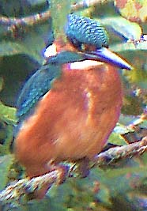
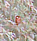
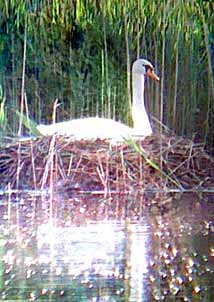

|  |  |
Diary 2002
August 24th 2002
More photos

Just to change the game completely and set myself a bigger challenge, I managed to get this picture today. Will I get pictures better than this with a new camera?August 23rd 2002
Photos

The latest photos have been taken on very cheap digital cameras (about £40). Today, this is the best I could manage of a Kingfisher:It's recognisable but only just. These days digital camera resolution is measured in megapixels. The camera I used for this is 0.1 megapixels. The view to my eyes of this Kingfisher through 8x binoculars was good. The photo, also through 8x binoculars, is a record of the event, but only just. It's my intention to soon get a much better digital camera (4 megapixels) to hopefully improve the quality of photos on this site beyond all recognition.
August 2002
Mute Swans

The cygnet has disappeared, so this pair of swans has unfortunately been
unsuccessful. As a reminder, here is a picture of the female on the nest.
I heard that the dead cygnet was seen in the water, which rules out ideas
of it being snatched by a predator. The growth of this cygnet was very
slow and it is thought that the aquatic vegetation at Chard is probably
not sufficient to support cygnets. Adult Swans do not usually stay long
and it is assumed that this is also due to poor feeding.
June 2002
Mute Swans
Not big news in most places, but always an attraction. Mute Swans have not been very common in recent years at Chard and so it's great news that not only have a pair stayed this summer, but also raised a cygnet.
If anyone has information or observations on the wildlife at Chard reservoir:
please email me: kevin@chardres.totalserve.co.uk
Diary for year 2001